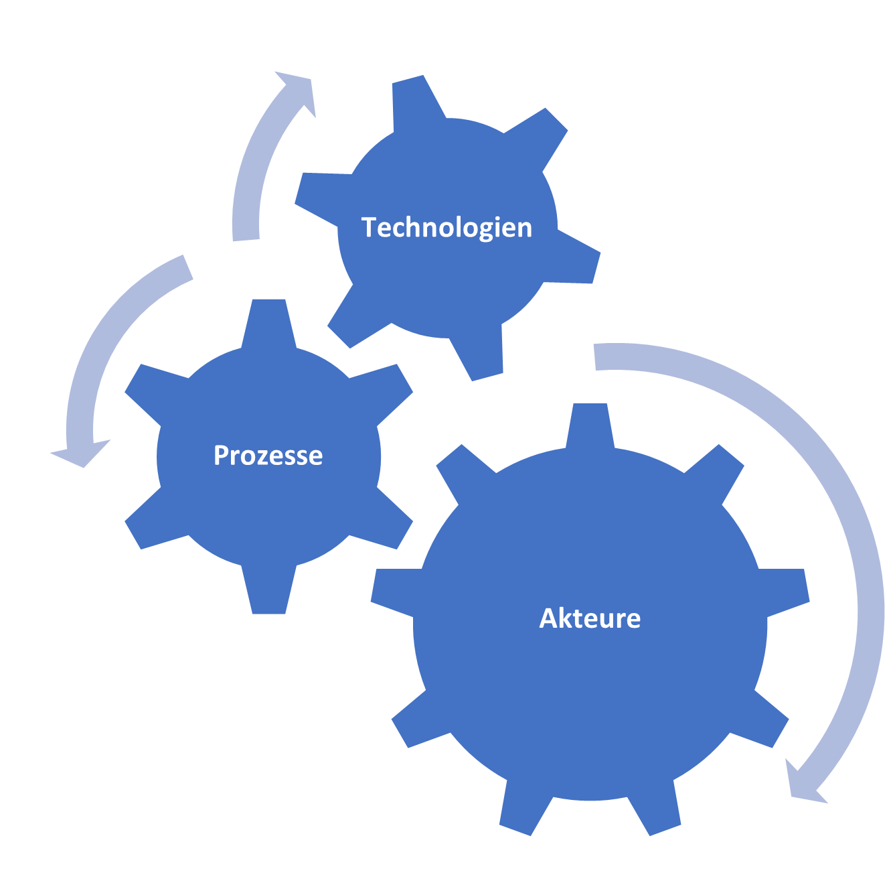

Wann: 23./24. Oktober, 2025 Wo: Schloss Marbach am Bodensee
Das Lösen von herausforderenden Entscheidungsfragungen aus Industrie und Wirtschaft mit Hilfe von datenbasierten Verfahren
ist unsere Leidenschaft. Zusammen haben wir uns über mehrere Jahrzente sowohl in der freien Wirtschaft als auch in der Forschung mit
datenbasierte Entscheidungsproblemen beschäftigt. Nach unserer Erfahrung haben viele Unternehmen
in diesem Bereich großes Potential und wir möchten dabei helfen, dieses zu heben. Mit dem Seminar wollen wir nicht nur unser Wissen und unsere Erfahrungen auf dem Gebiet datenbasierte Entscheidung teilen,
sondern gehen auch individuel auf Ihre Fragen und Herausforderungen ein und erarbeiten mit Ihnen Zusammen die Antworten.

Für uns stehen die Menschen, die Entscheider, mit Ihren konkreten Fragestellungen,
Probleme und Herausforderungen im Fokus. Die eingesetzten digitalen Werkzeuge sollen
dabei so ausgewählt und eingesetzt werden, dass diese eben dem Menschen und seinen Bedürfnissen
dienen und so den Dreiklangs Mensch, Prozess und Technolgie ermöglichen.
| explore |
Eine Einordnung und Orientierung der gegenwärtigen Trends im Entscheidungsumfeld wie Künstliche Intelligenz, mathematische Optimierung, Data Science oder maschinelles Lernen. |
account_tree |
Identifizierung von Abhängigkeiten in unternehmerischen Entscheidungsproblemen und der Erkennung, wann menschliches Urteilsvermögen eingesetzt werden sollte. |
| euro |
Identifizierung entscheidungsrelevanter Kosten, Akteure und Blickwinkel. Wir geben eine Einordnung von datenbasierte Entscheidungssysteme in Organisationen und zeigen deren Zusammenhang mit der Digitalisierung. |
logo_dev |
Software- und IT-Kenntnisse zur Anwendung datenbasierte Entscheidungssystemen. |
| school |
Lernen und erfahren Sie, wie Sie datenbasierte Entscheidungsverfahren auf Ihre Herausforderungen anwenden können und zu einem signifikanten Mehrwert führen. |
groups |
Austausch mit Experten und anderen Industriepartner. |
| rule_settings |
Wenden Sie bewährte Vorgehensweisen für das Prozessmanagement bei der Datenanalyse an, einschließlich der Einrichtung von Arbeitsabläufen für datenbasierte Projekte. |
fitness_center |
Stärkung Ihrer analytischen Fähigkeiten, um in einer daten- und algorithmenbasierten Welt die richtigen Fragen zu stellen. |
| book |
Sie erhalten alle gezeigten und verwendeten Materialen plus Zusatzmaterial. |
handshake |
Ein persönliches und vertrauliches Vorabgespräch, damit wir die diskutierten Thmen und Beispielfälle auf Ihre Fragen und Herausforderungen anpassen. |